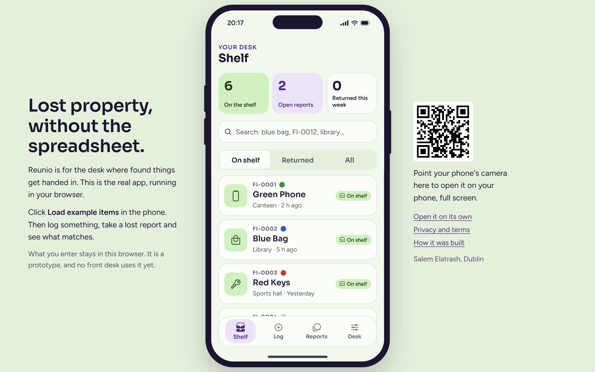
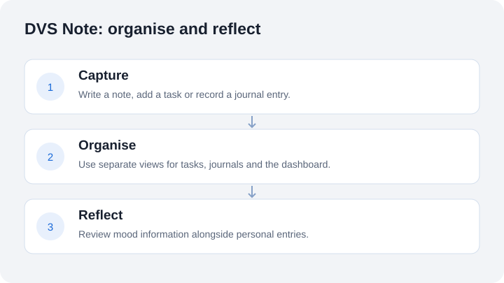

Personal projectIn development
Assistant S
A personal AI workspace for conversation, study and desktop tools. I’m exploring useful memory, local processing and control over how the assistant works.
Python · JavaScript · Electron · AI integrations
A low-power, fully offline S model is a future goal, not a completed trained model.

From final-year researchPublished extension
Scribevo
Writing support for dyslexic spelling, developed from my WordFlow research project. A Chrome extension connects to a Python API and lets the writer review each suggestion.
JavaScript · FastAPI · Python · PyTorch · Transformers
The research prototype and the current product have different evaluation results.

Lost propertyWorking prototype
Reunio
A lost-property app for front desks. Staff log found items, review explained matches to lost reports and check ownership before recording a return.
TypeScript · React Native · Expo · On-device inference
The public demo uses example data. A real front-desk pilot has not been established.

TU Dublin team projectAcademic archive
DVS Note
A productivity and reflection application built with two fellow students. The project brings notes, tasks, journals and mood views into one workspace.
React · Next.js · Material UI · MongoDB
A team contribution, preserved as academic work rather than a current hosted product.